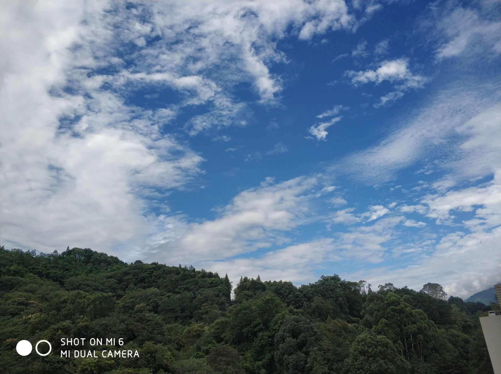

科技文献检索
快、准、有用
做科研60%的时间都用在了查找科技文献上
信息素养（1.信息意识-前提 2.信息知识-基础 3.信息能力-核心 4.信息道德-准则
授课26
讨论2 考勤10%
自学2 课题作业20%
答辩 课终考核70%（以ppt分小组 开卷 3-4人）
中特赵 上课地点改了
平时成绩50%–（1.讨论课 十周之后 –每组选评委 2.课程论文 ）
期末成绩50%
食品生物技术
找一个点 ec .gaba查资料 进行综述
第十周交给王yi 2015年之后，10篇其中外文5篇 3000字
是什么 ？ 危害？ 产生途径？ 目前现状？解决途径
感觉今天的天格外蓝
